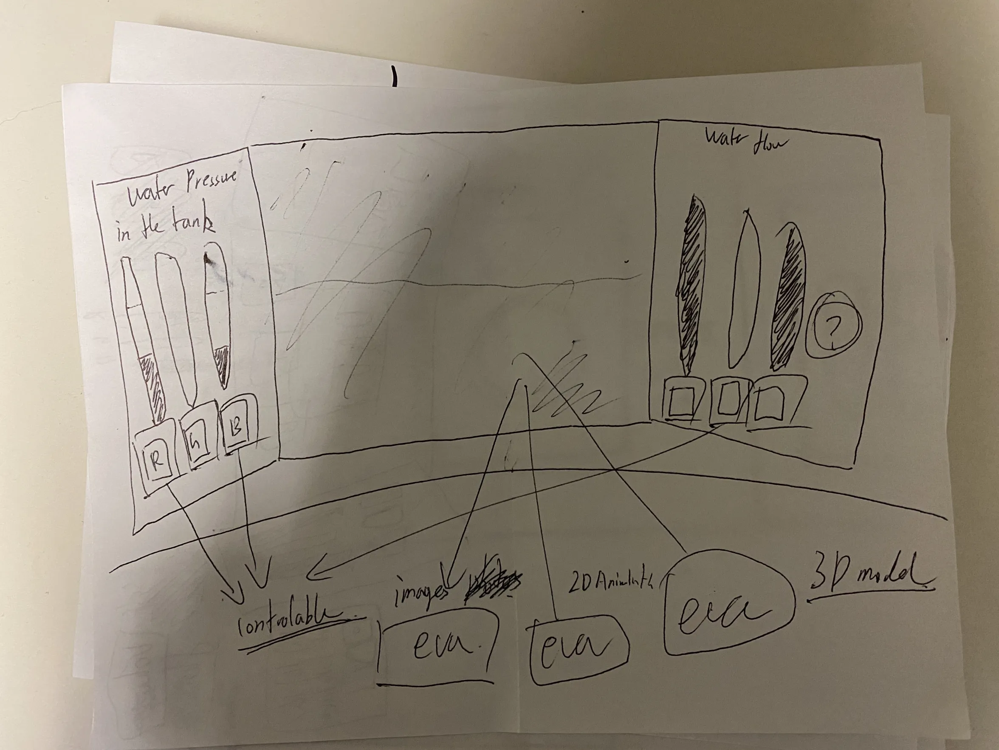
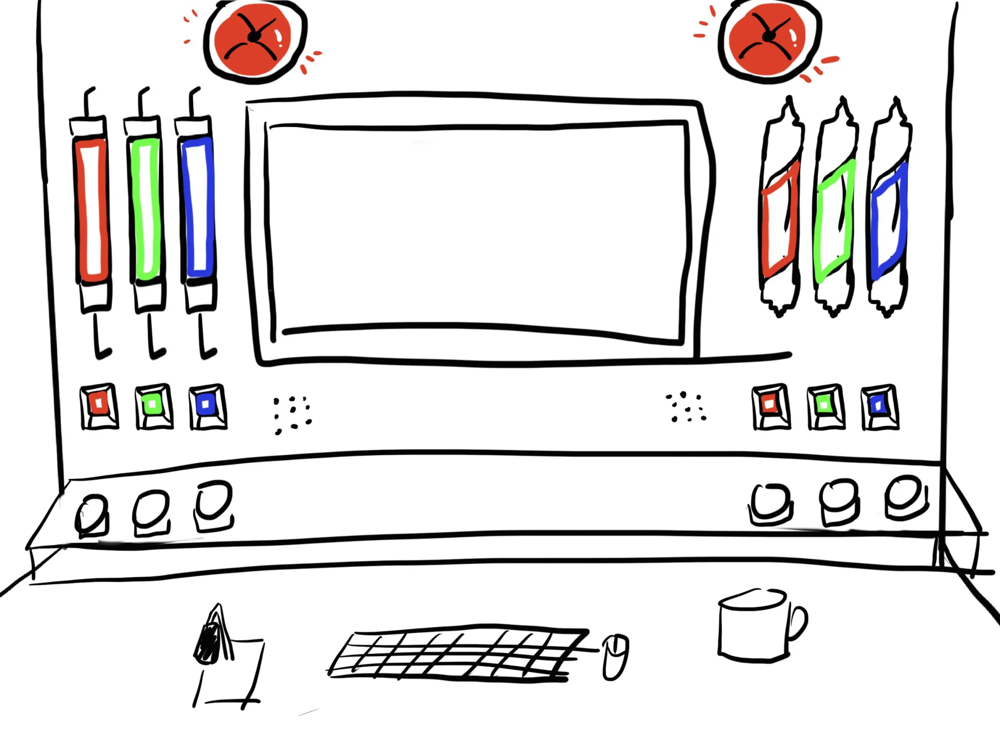
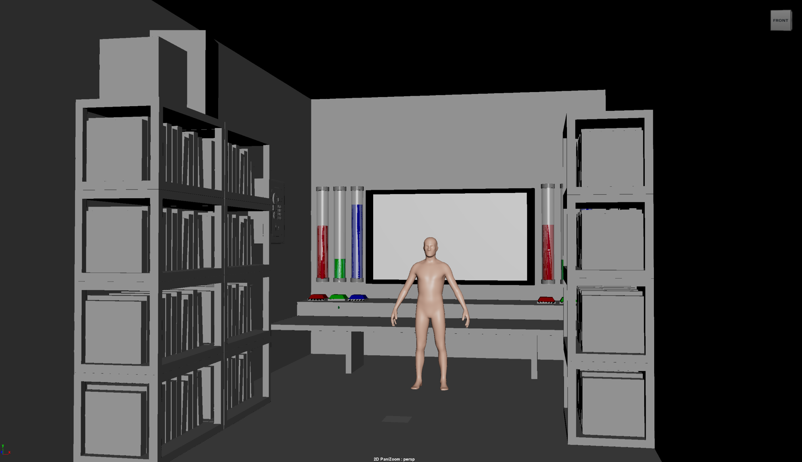
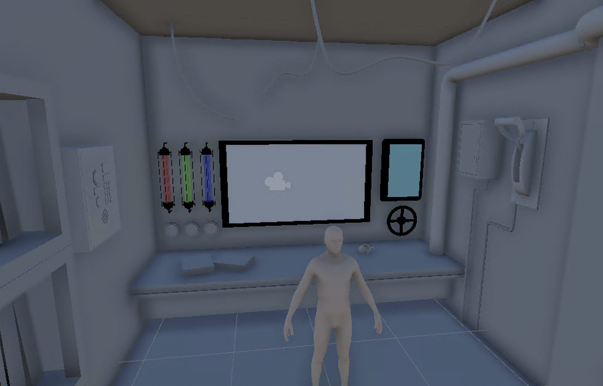
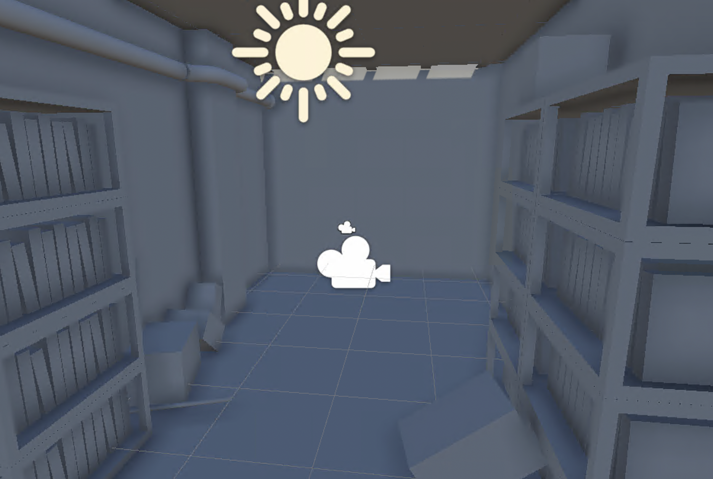
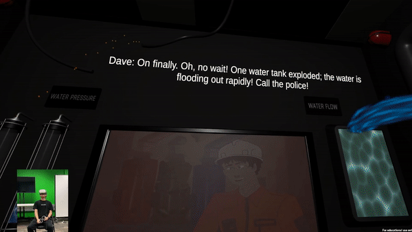

Designing core mechanics around emerging hardware — in 1 to 2 weeks
Designed and developed immersive interactive experiences under extreme time constraints (1–2 weeks per round). The primary goal was to design core mechanics around various emerging hardware, test them immediately, and iterate based on fast-paced feedback.
Designing for Spatial Constraints (Pipe Overflow)
Designing a compelling VR experience with zero locomotion (movement) due to strict physical room-scale constraints.
Diegetic UI & Interaction Hub: Instead of standard VR movement, I constrained the player to a stationary "CCTV Control Room" operator role. I designed an interactive control panel board where all interactions (pressing buttons, pulling levers) were diegetic and within arm's reach.
Rapid Execution: Sketched the core interaction flow, created functional 3D blockouts, and worked alongside engineers to connect visual feedback to interaction logic — fully conceptualizing and testing the environment within a 2-week timeframe.
Full Experience
Pipe Overflow — Full Experience







Asymmetric Hardware Co-op (Hotdog Party)
Designing an intentionally challenging cooperative loop that forces communication by splitting locomotion and manipulation between two players.
Intentional Friction for Social Interaction: Distributed the cognitive load by assigning the foot controller (movement) to Player A and the hand trackers (object manipulation) to Player B. This required them to constantly communicate to navigate and survive.
Rapid Balancing: Iterated daily on movement speed and interaction bounding boxes based on playtests to ensure the "frustration" translated into fun, engaging social cooperation rather than an unplayable experience.
Full Experience
Hotdog Party — Full Experience


Controller-Free Gestures & Spatial Co-op (Mushroomy's Island)
Translating gross motor movements (full-body poses) into precise digital mechanics, while managing a high-throughput physical exhibition space.
Controller-Free Body Tracking & Asymmetric Co-op: Designed an asymmetric co-op loop where Player 1 (Kinect) uses full-body poses to dynamically shape and scale 3D objects, while Player 2 (PC) manages the inventory. Collaborated closely with the programming team to map physical pose data into responsive in-engine mechanics within a tight 2-week sprint.
Full Experience
Mushroomy's Island — Full Experience

Extended the experience design beyond the screen. I designed the physical Experience Map for the BVW Festival (optimizing for a 24 guests/hour throughput). By strategically laying out the physical queue lines, spectator monitors, and physical props, I ensured a seamless Location-Based Entertainment (LBE) flow from the real world into the digital space.


Conceptualized a post-game digital souvenir experience. Collaborated with engineers to automatically route gameplay screenshots to a live Notion gallery I designed for the players.